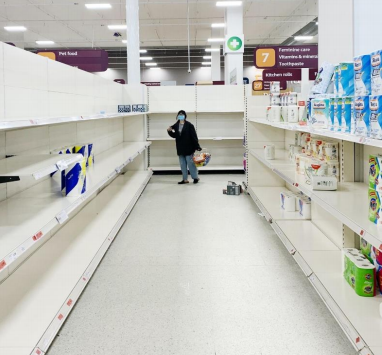

Supermarkets, Super Workers and Superbly Underprepared Supply Chains: How are our Food Retailers Fighting Against the Impact of Coronavirus?
 Is it a bird? Is it a
plane? No, it’s the
UK’s supermarket
staff!
Is it a bird? Is it a
plane? No, it’s the
UK’s supermarket
staff!
Now classed as essential workers during the COVID19 worldwide pandemic response, they are finally receiving the praise they deserve. That is, if you exclude reports of them being coughed at or verbally abused during shifts for enforcing protective measures. Supermarket employees are persevering through a crisis without precedent in their lifetimes. May they receive enough claps to compensate for their minimum wage salary, incredibly stressful work environments and general threat to life.
Meanwhile, with the closure of restaurants, cafes and local markets, supermarket sales have jumped by a fifth, as shoppers rushed to buy an extra £1.9bn of groceries and personal goods. As a result, supermarket chains are scrambling to keep shelves stocked whilst training ‘the youth of today’ under ever-changing government guidelines, and enforcing social distancing in their stores without the option of using tasers and speed guns. Tesco, for instance, reported that in the 10 days prior to 31st March they had 35,000 new members of staff join the company. With supermarkets busier now than even at the Christmas period, a seasonal spike in footfall so extreme even canned sardines describe it as “a bit stuffy”, millions have sought work at our nation’s biggest food retailers to help them cope despite the inherent risks.
What issues are stores facing?Hiring an army of good-intentioned workers with little or no experience comes with obstacles. Many new employees have been tossed into the deep end without so much as a pool noodle to cling to, as they try to navigate an unfamiliar work environment sporting newly imposed safety measures. Add into the mix every irate Karen, Sharon and Steve muttering their complaints whilst panic buying all the toilet paper in existence, and you have a recipe for operational jeopardy. This trolley-full of issues has arisen for supermarket chains in a matter of weeks, creating the very real paradox of empty shelves and a mountain of waste.
Yet, despite your embarrassing distant relatives hoarding essential items as desperately as awkward jokes to drop at family gatherings, food waste has risen sharply and alarmingly. “Why is this?” you might ask. Well, it boils down to a supply chain that relies on stability and predictability being rocked by both the shutdown of the hospitality sector as well as panic buying. If stores can predict demand, they can stock appropriately and minimise food waste, but thanks to the uncertainty of coronavirus, experience curves have exited stage left leading to an alarming loss of supply. The depressing irony is that despite plenty of unspoiled food being thrown away due to closure of restaurants, cafes and hospitality events, many supermarket shelves have been collecting dust and weeping for the swift return of pasta, flour and tinned tomatoes. However, empty shelves don’t necessarily denote a shortage of food and supplies so much as they lay bare an ill-prepared supply chain trying to keep up with increased demand. If you’re wondering why our biggest supermarkets have been so wholly blindsided despite months of warnings, let me introduce you to “Just In Time” inventory.
What is Just In Time inventory?Up until the 1980’s, supermarkets held the majority of their stock in the back rooms of stores, but during a period of economic downturn in 1977, those radical trailblazers at Tesco changed the game, or rather, invented a whole new game called ‘winning’. They found that cash-strapped customers were shopping far less than usual due to financial uncertainty, and thus began ‘Operation Checkout’, the suburban Bond film nobody ever watched. Tesco found a way to cut prices by swapping to a “just in time” or “JIT” inventory model, now seen widely across stores today, where instead of storing bulk deliveries of supplies in the back, they’d order in stock daily based on each individual store’s demand and suppliers subsequently send these goods to the supermarket’s distribution centre. To cut storage costs, retailers have ditched housing the bulk of stock themselves, meaning what you see on the shelves is often the majority of what the supermarket currently has on site. In normal circumstances, the JIT supply chain model is very efficient and saves both the retailer and their consumers money. But the pandemic deconstructed this ‘superior’ supply chain model’s efficiency as artfully as a cheesecake on Masterchef when demand surged under lockdown. Even worse, research findings have suggested only a few extra items per household’s weekly shop was enough to do the damage.
Let me paint you a picture: if a crazed mugger unexpectedly accosts you in an alley, would you rely on a superhero called Just-In-Time Man, famed for his last-minute appearances, to come to your rescue? What if he runs into traffic? What if there’s a family emergency he’s got to sort out first? He’s not left himself any time to ring up Superman to cover his shift and you’ve probably already lost your wallet during his moral dilemma. In reality the vicious cycle goes like this: distribution centres are running low on stock due to increased demand, but they can’t get more stock into these centres because they can’t deliver to the supermarkets fast enough, meanwhile supermarkets don’t even have the backroom space to store it all. This cost-cutting model was never built to deal with a worldwide pandemic and it’s been shockingly apparent.
What are supermarkets doing to adapt and cope with issues presented by coronavirus?For their latest mission, should they choose to accept it, supermarkets must address these challenges in what I have dubbed ‘Operation Coronavirus’. It’s been crucial for essential retailers like supermarkets to make swift changes to operations to meet the increased demand whilst keeping employees safe. But what actions have they taken to achieve this? To dissuade shoppers from jumping on the panic-buying bandwagon, the major supermarket chains have all issued similar statements to customers that there is plenty of food and supplies for the many, if the few would stop selfishly bulk buying it.
Some supermarkets have responded by slimming down product ranges to enable them to focus on essentials. This means you might not be able to find those cute little pasta bows you love so much on the shelves, but a health worker hitting the supermarket after a long shift might be able to finally buy a single bag of drably shaped spaghetti for next week’s meals. It has also proved important to focus employees time on essential restocking, manning entrances and swiftly serving customers on the tills by closing meat, fish, deli and salad bars, which will also reduce waste. Some retailers have even repurposed employees from closed departments to work in crucial areas desperate for manpower, like John Lewis, who deployed staff to their Waitrose supermarkets. Meanwhile, the government has attempted to ease the strain on food retailers by treating logistics workers the same way as the emergency services including NHS staff.
Despite the constant stream of hurdles that supermarket supply chains have faced, their priority is to keep essential items flowing. With more and more workers selfisolating or becoming ill, supermarkets have compensated by launching mass recruitment campaigns, collaborating with the Freight Transport Association to ensure that trucks still get services as and when required, and imposing restrictions on the quantity of essential items you can purchase in a single shop to manage demand.
ConclusionUltimately, despite unprecedented and unpredictable demand exposing the weakness of JIT inventory, the system will likely be able to cope so long as staffing levels can be maintained and imports are not disrupted for a long period of time. But I think the moral centre of the crisis response has been the dedication and bravery of essential workers. I’ll use the tannoy to announce this next part, “Ladies and gentlemen, humble gratitude, eternal thanks and an increase in wages for essential food distribution staff to aisle 5”. Just recently, across the pond, the US’s 8th largest retailer, Target, raised their minimum wage to $15 permanently having initially raised it to that level as ‘hazard pay’.
There is also a real opportunity here, exposed to us by the impact of coronavirus, for reassessment in retail manufacturing models and operations. Keeping my ear to the ground, I’ve picked up on promising rumbles in the technology and supply chain sectors of adapting software to keep existing staff safe, increase the efficiency and productivity of new staff as fast as possible and to make sure customers have access to essential items. As one example, an app downloadable to any smartphone that displays precisely where items are on the shelves could be time and cost effective, particularly for new hires. If a young employee unfamiliar with their new work environment needed to restock the coffee shelf, an app like this could potentially allow them to search for this item, even down to the brand, for the quick restocking required in a post-coronavirus world. Ideas like these could be part of an important rethink of supermarket supply chain models. As the Bond villain from Operation Checkout might utter in a classic monologue that reveals the entirety of his devious plans, just in time logistics may just be out of time.
SOCIAL RADIO


Powered by EquiNordic Systems